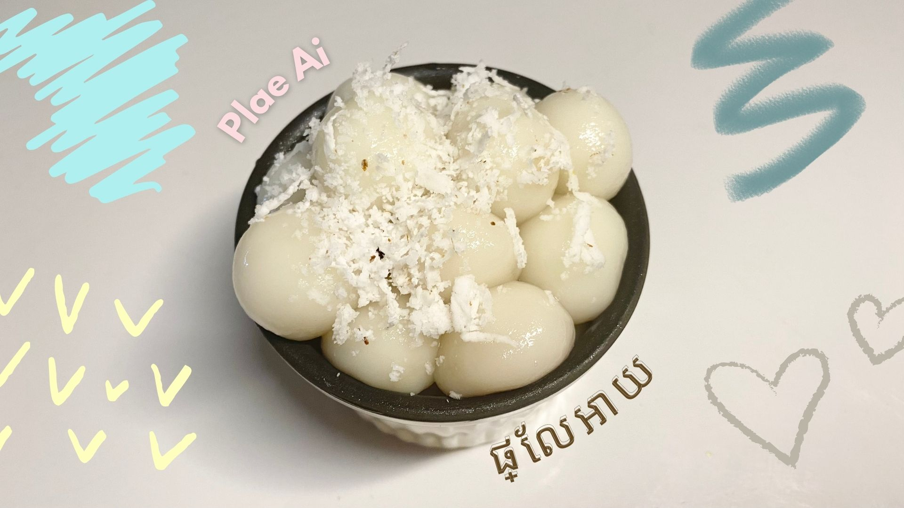
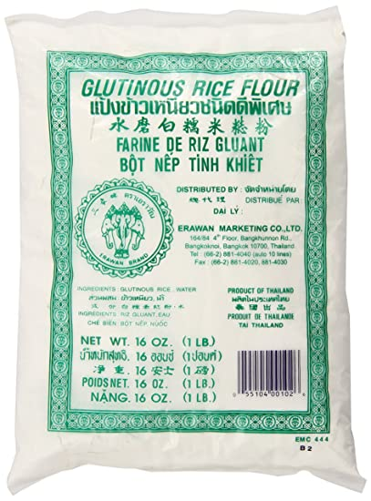

Num Plae Ai.
Nom Plae ai, sweet rice balls, is a very well-known Cambodian dessert. Because of the legend surrounding a married couple, it has been nicknamed "husband killer." In the legend, the wife served a lovely plate of sweet rice round-shaped dumplings for him after the husband returned home. He ate them all since they smelt so tasty, but he choked and died because they have only been cooked recently and the texture of the dumpling was sticky. That's where the amusing name came from. This dish is made using glutinous rice flour and palm sugar filling in the middle, then topped with shredded coconuts.
Ingredients.
- 10.5oz or 300g Glutenous rice flour
- 120ml of hot water
- 70g of palm sugar
- Shredded coconut

palm sugar

glutinous rice flour
Instructions.
- First, slice the palm sugar into small tiny slices.
- Then, pour in 10.5oz or 300g of the glutinous rice flour into a bowl and mix it with the medium hot water little by little using your hand or a spoon. The goal is to achieve doughy consistency.
- After achieving a dough consistency, pinch a bit of the dough-like flour and spread it using your fingers, making sure that it is wide enough to fit the tiny slices of palm sugar.
- Then, wrap flour around the sugars and roll it into small medium-sized circles. Make sure that those balls are smooth, clean, and tight, so they won't break in the process of boiling it. Repeat this process until there's no more flour left.
- After completing that step, boil 120ml of water. Then, add the rice balls into the water and let it sit for a while until it's fully cooked.
- Now, set up tiny and put the Nom Plae Ai in. Add shredded coconut on top to enjoy. Your dessert is ready to be served!
Reference.
- Silva, Marga. “Top 26 Street Food in Cambodia.” Trip101, Trip101, 23 June 2021, https://trip101.com/article/street-food-in-cambodia
- ”How to make Glutinous rice flour with palm sugar ( Khmer dessert ) នំផ្លែអាយ.” Youtube, Love Candy recipe, 19 May 2016, https://www.youtube.com/watch?v=qZrYLwX5yto
- Palm Sugar (image link)
- Glutinous Rice Flour (image link)
{kind=link}
{kind=link}